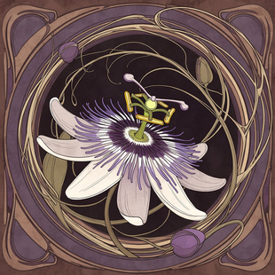

This is a test app for Passiflora.

Open Internal HTML Page in App Open External Page in Browser Check Location
Test File System Test Menu Open Test Save As Test File Browser
Import File Export File Export VFS Import VFS Erase VFS Reset VFS
Camera: -- select -- Microphone: -- select -- Refresh Devices
Record Video + Audio Play Recording